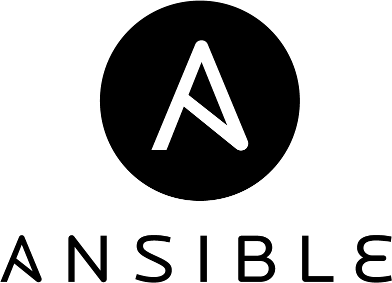

×
Terminal Options
Font Size
<--
16px
-->
Terminal Size
Cols:
Rows:
Local Echo
<--
-->
State: Disabled
Force Off
Colours
<--
Monokai
-->
Format: Xresources
Upload
Keep Alive
0 to disable
seconds
Network Traffic
rx:
0Bytes
tx:
0Bytes
Host Key
Websocket Proxy
Websocket Proxy URL
⚙
SSHv2 Login
IP Address:
Username:
Password:

FortiManager with Ansible
Create ADOM
Add FortiGate Device
Modify Interface Access
Create Policy Package
Create Firewall Policy
Install Policy Package
Playbook preview
Your playbook goes here!
Execute